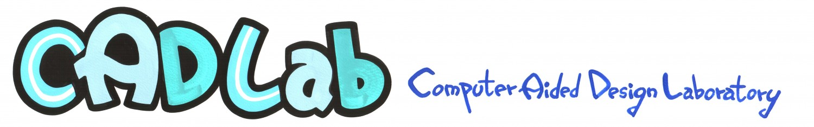

Original CADLab logo
The logo below is reproduced from the historical laboratory website.

Laboratory motto
Do your worst and i will do my best
— Hamlet (attribution as displayed on the original laboratory page)
간단한 것을 복잡하게 만드는 것은 평범함이고,
복잡한 것을 간단하게 만드는 것이 창의력이다.
— Charles Mingus, an artist and member of Oasis (attribution as displayed on the original laboratory page)
Historical transcription: quotations and attributions are reproduced as they appeared in the user-supplied screenshot of the old CADLab site; their original sources and attributions have not been independently verified.